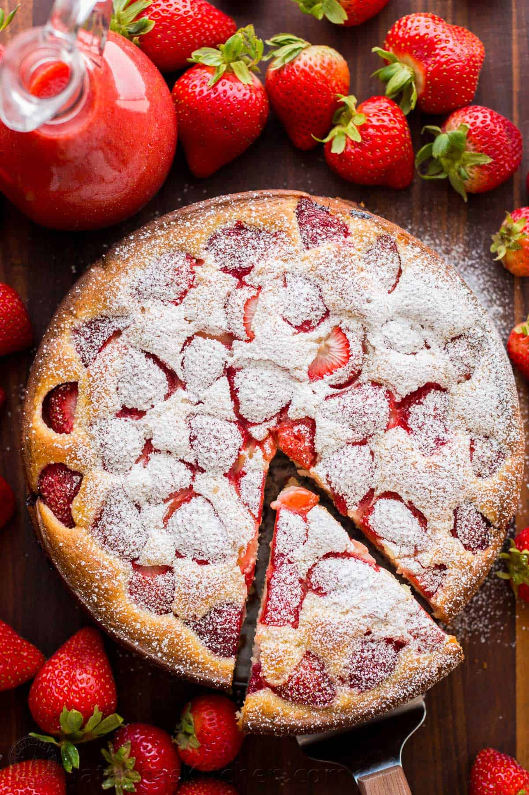

Easy Strawberry Cake

This is the easiest Strawberry Cake with a soft and moist crumb, bursting with fresh strawberry flavor and you will love the strawberry sauce. Watch the video tutorial and see why this is one of our all-time favorite strawberry recipes.
2large eggs room temperature1 cupsugar1 cupsour cream½ cupvegetable oil1 tspvanilla extract2 cupsall-purpose flour (250 grams)2 tspbaking powder½ tspsalt12 ozstrawberries hulled1 tsppowdered sugar, for dusting (optional)
Butter a 9” springform pan and line the bottom with parchment paper. Preheat oven to 375˚F. Prepare 12 oz of strawberries for the cake: dice 6 oz of strawberries and slice the second 6 oz into halves.
In a large mixing bowl, using an electric hand mixer (or stand mixer), beat together 2 eggs with 1 cup sugar on high speed for 5 minutes or until light in color and thick.
Add 1 cup sour cream, ½ cup oil, 1 tsp vanilla and beat on low speed until well combined.
In a small bowl, whisk together: 2 cups flour, 2 tsp baking powder and ½ tsp salt until well incorporated. With the mixer on med/low speed, add flour mixture to the batter 1/3 at a time, letting the flour incorporate with each addition and continue mixing just until well combined. Do not over-mix.
> Pour half of the batter into prepared pan. Top with 6 oz of diced strawberries then spread remaining batter over the top. Cover the surface with 6 oz of halved strawberries (cut-side-down), pressing them down just slightly into the batter. Bake at 375˚F for 45 minutes, or until a toothpick inserted into center comes out clean. Let cake rest in pan 15-20 min before removing the ring.
Run a thin spatula around cake edges to loosen from pan. then transfer to a cake platter. Cool until just warm or at room temperature. To serve, dust with powdered sugar if desired. Drizzle individual slices generously with strawberry syrup.
16 ozstrawberries, hulled and halved¼ cupsugar, or to taste
While the cake is baking, make the strawberry sauce: In a blender or food processor, combine 16 oz strawberries and ¼ cup sugar (or add sugar to taste) and blend until pureed.